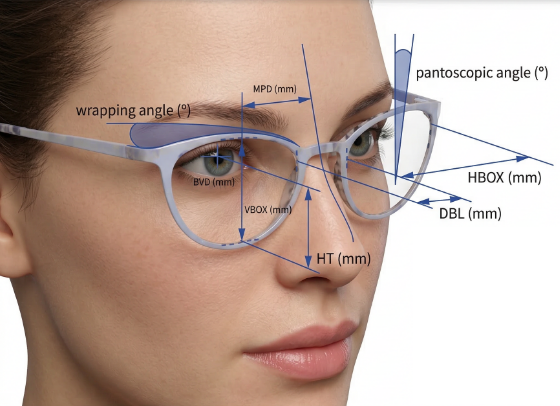

<<!--
  File: index.html
  Location: /project-root/
  Purpose: Main start page of the optical measurement system.
  Description:
    - Displays hero image (VisuCareM.png)
    - Provides navigation to measurement workflow
    - Allows Adult/Child selection
    - Entry point for the entire web application
-->

<!DOCTYPE html>
<html lang="lt">
<head>
  <meta charset="UTF-8" />
  <title>Matavimo sistema – Startas</title>
  <meta name="viewport" content="width=device-width, initial-scale=1.0, viewport-fit=cover" />
  <link rel="stylesheet" href="css/style.css">
  <script src="js/main.js" defer></script>
</head>

<body>
  <div class="container">

    <div class="image-panel">
      
    </div>

    <div class="right-panel">
      <div class="title">Optinė matavimo sistema</div>
      <div class="subtitle">
        Pradėkite naują matavimą arba atidarykite kliento duomenis.
        Visi matavimai atliekami naudojant fizinius marker’ius ir dviejų nuotraukų metodą.
      </div>

      <button class="btn btn-primary" id="btnStart">Start a new measurement</button>
      <button class="btn btn-secondary" id="btnCustomers">Access or edit customer files</button>

      <div class="selector">
        <button class="active" id="selAdult">Adult</button>
        <button id="selChild">Child</button>
      </div>
    </div>

  </div>
</body>
</html>
